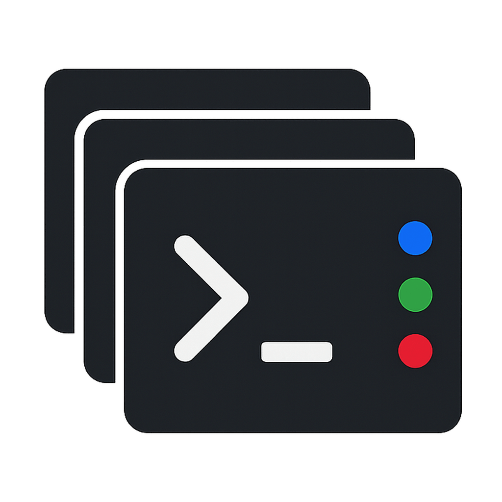

还没有 Claude Code 或 Codex 会话
打开终端后启动
claude
或
codex
，
会话卡片会自动出现在这里
⚙
Claude Code
Codex CLI
窗口置顶
状态提示音
开机自启动
终端程序
正在扫描...
Hook 诊断
最近事件
尚未收到
事件服务
检测中
Claude Hook
未安装
Codex Hook
未安装
Codex 信任
--
降级模式
检测中
重新检测
重新安装
查看解决步骤
卸载
Hook 解决步骤
打开 Codex
复制 /hooks
完成后检测